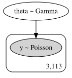
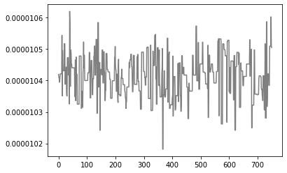
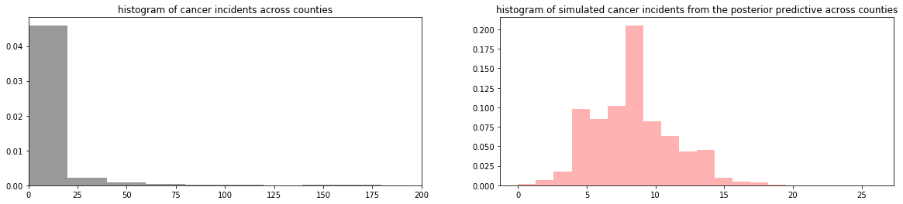

Lab 5: KL-Divergence and Modeling with pymc3#
This lab is adapted from AM207 (Harvard). Data files are in the book’s data/ folder. Worked solutions are collapsed: try each exercise before expanding them.
In this lab
The Benefits and Draw Backs of Variational Inference with KL-Divergence
Statistical Modeling with
pymc3
Closed Form KL-divergence for Two Gaussians#
Let the target distribution be a bivariate Gaussian \(p(x) = \mathcal{N}(\mu_p, \Sigma_p)\), and let our variational family be isotropic bivariate Gaussians,
A bit of matrix algebra allows us to write the KL-divergence between two Gaussians as
where \(D\) is the dimension of the two Gaussians.
Forward vs Reverse KL#
When we fit an isotropic Gaussian \(\mathcal{N}(\mu_q, \Sigma_q)\) to a non-isotropic target Gaussian \(\mathcal{N}(\mu_p, \Sigma_p)\) using the KL-divergence, we mean to find
Which KL-Divergence Should We Optimize?#
Is there any difference in minimizing these two different divergences? That is, does the following hold?
If not, which type of KL-divergence should we use when fitting an isotropic Gaussian \(\mathcal{N}(\mu_q, \Sigma_q)\) to a non-isotropic target Gaussian \(\mathcal{N}(\mu_p, \Sigma_p)\)?
pymc3#
Introduction to pymc3#
pymc3 is a python package for building and performing inference on Bayesian statistical models. Notably, pymc3 implements a number of popular approximate inference methods like Markov chain Monte Carlo (MCMC) and variational inference (VI).
Along with core model specification and fitting functionality, PyMC3 includes functionality for summarizing output and for model diagnostics.
Defining a Basic Model in pymc3#
After importing the library and instantiating a pymc3 model:
import pymc3 as pm
bayesian_model = pm.Model()
We defined our model using a context manager (with statement – a python construct that manages the allocate and release resources involved with performing an action).
#define hierarchical model in pymc3
with Model() as bayesian_model:
#priors on theta
theta = pm.Gamma('theta', alpha=alpha, beta=beta)
#convert rate into number of disease incidents
mu = theta * 5 * average_pop
#likelihood
y_obs = pm.Poisson('y', mu=mu, observed=y)
The model is specified declaratively inside the context manager.
A Pooled Bayesian Model for the Kidney Cancer Data Set#
Suppose we treat all the cancer incidents \(y_j\) across the US as iid samples from a single Poisson distribution \(y_j \sim Poi(\theta)\), where \(\theta\) is the same underlying rate for kidney cancer for every county.
Question: Is this a good way to model the Kidney cancer data?
df=pd.read_csv("../data/kcancer.csv")
y = df['dc'].values
n = df['pop'].values
average_pop = n.mean()
#hyperparameters of Bayesian model
alpha=10.
beta=1000.
#define hierarchical model in pymc3
with Model() as bayesian_model:
#priors on theta
theta = pm.Gamma('theta', alpha=alpha, beta=beta)
#convert rate into number of disease incidents
mu = theta * 5 * average_pop
#likelihood
y_obs = pm.Poisson('y', mu=mu, observed=y)
#draw graphical model for the thing we just defined
model_to_graphviz(bayesian_model)

Inference Using pymc3#
A number of different samplers are implemented in pymc3. You have the flexibility of specifying different samplers for different variables in your model (e.g. you can implement a MH-in-Gibbs sampler using pymc3).
#sample 1000 samples from the posterior of the model, using 1000 iterations to tune the sampler
#the default sampler for pymc3 is a type of MCMC sampler called No-U-turn HMC,
#which we have not covered in class
with bayesian_model:
#specifying a specific sampler
steps = pm.Metropolis(vars=[theta, mu])
#use the specify sampler to sample from the posterior of the model
trace = pm.sample(1000,step=steps, tune=1000)
#using default sampler
# trace = pm.sample(1000, tune=1000)
Multiprocess sampling (2 chains in 2 jobs)
Metropolis: [theta]
Sampling 2 chains: 100%|██████████| 4000/4000 [00:00<00:00, 9235.06draws/s]
The number of effective samples is smaller than 25% for some parameters.
Diagnostics Using pymc3#
pymc3 implements also a large number of convergence diagnostics for MCMC samplers – traceplots, auto-correlation plots, Gelman-Rubin statistic etc.
posterior_samples = trace['theta'][500::2]
plt.plot(np.arange(len(posterior_samples)), posterior_samples, color='gray')
plt.show()

Posterior Predictive Sampling with pymc3#
Given the trace and the model, pymc3 can also automatically sample from the posterior predictive.
pp_samples = pm.sample_posterior_predictive(trace, samples=1000, model=bayesian_model)
fig, ax = plt.subplots(1, 2, figsize=(20, 4))
ax[0].hist(y, bins=30, density=True, color='gray', alpha=0.8)
ax[0].set_xlim([0, 200])
ax[0].set_title('histogram of cancer incidents across counties')
ax[1].hist(pp_samples['y'].flatten(), bins=20, density=True, color='red', alpha=0.3)
ax[1].set_title('histogram of simulated cancer incidents from the posterior predictive across counties')
plt.show()
100%|██████████| 1000/1000 [00:00<00:00, 1153.18it/s]
